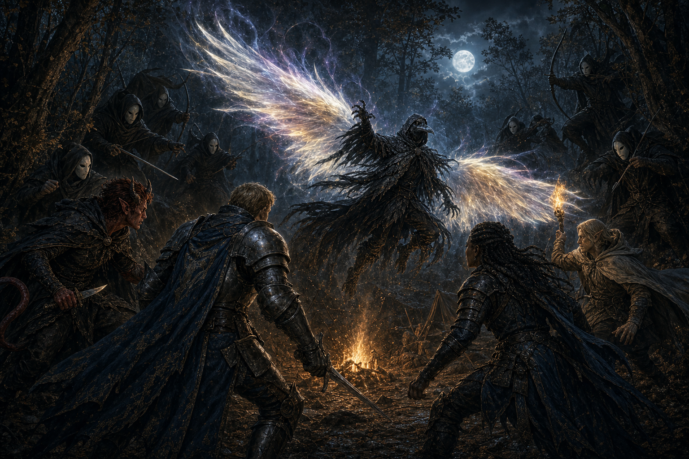

Chapter 1: Moonlight Predators
Deep into Lothum


Deep into Lothum
15049.09.03
經過了九個月左右的時間，冒險者們終於長途跋涉到洛森王國。旅行途中，華生和羅特都從拉里爾那兒學會了一點妖精語的基礎，而羅特同時也學習了一點吹奏笛子的技巧。然而，圖伊特對他身邊的法器，並沒有得到更深入的認識。不過因為一路上支出大家的旅費，M伯爵破產了。
來到洛森王國的關口，在拉里爾的鼓勵下，羅特和華生嘗試用妖精語詢問衛兵該如何到王國的首都弗萊特境，卻無法得到他們能理解的答案，於是還是靠著拉里爾和衛兵溝通，才成功入關。同時，拉里爾也不斷提醒冒險者們，因為妖精有很嚴重的種族歧視，來到妖精王國，要盡可能地表現的「更妖精」一點，不過他的說法只讓冒險者們滿頭問號。
騎著馬，圖伊特背後突然蹦出了一個身影，跌坐在他的馬上，大家回頭一看，是個熟悉的人影。先前被神王呼喚回去的蘇加魯竟然出現了，但外貌上產生了些微的變化—他身著斗篷，頭髮盤著，膚色似乎蒼白了一點。大家停下馬，和重新出現的蘇加魯詢問，得知他獲得了一個新的名字：艾倫卓茲克，而過去對神王的質疑與輕視，似乎轉變為崇敬與信仰。對於這個既熟悉又陌生的夥伴，大家決定先繼續趕路再說。
接近日落時刻，冒險者們在樹林邊看見了一名行蹤鬼祟的人影。經過追擊，他們將這名人形生物撂倒在地，撥開他的頭盔，看起來是一名人類。人類向他們求情，表示自己名為帕斯卡。而經過與帕斯卡的溝通，他們得知帕斯卡是先前與他們一同冒險的帕拉丁的哥哥，因為聽聞麥克嵩傳來的帕拉丁死訊，並在麥克嵩打探資訊後，前往洛森王國尋找可能知道帕拉丁消息的人，正巧碰上冒險者們。對於說話似乎充滿漏洞的帕斯卡，冒險者們還是告知了他帕拉丁基本上已經是死透的事，也表示大家是因此才來洛森王國尋找蜘蛛神教的母親大人。帕斯卡掏出自己珍藏的捲軸，召喚出了一隻貓頭鷹，將消息傳遞出去後，便與冒險者們一同前行。
夜晚，冒險者與甫加入的艾倫以及帕斯卡因為拉里爾警告（非妖精在洛森王國內都不會過夜，因為晚上很有可能被妖精處理掉），小心翼翼地搭建了一個隱密空間躲藏，並輪流守夜。
15049.09.04
在華生的魔法失效的同時，冒險者們一併從魔法空間內摔到地面，不用叫喚也都醒了。大家簡單進食後，便騎馬前往不到半天路程的弗萊特境。
妖精的城市和人類王國內的模式很不同，大量繽紛的帳篷散落在森林間，地上的道路不像特別鋪出來的，而是走出來的。在拉里爾的指引下，大家先去見一位被尊稱為「師父」的在地耆老，向他詢問關於蜘蛛神教和母親大人的消息。
來到師父的帳篷，兩名年輕的妖精雙胞胎女子莉娜和麗塔迎接了大家，熟稔普通語的他們同時擔任師父的服侍以及翻譯。冒險者們詢問了關於母親大人巢穴的位置，師父將地圖「投影」至空中，讓冒險者們檢視。華生拿出紙筆抄寫，而M伯爵則靠著他的魔法球成功的把地圖抄錄在其中，也確認能夠直接投影出來。
莉娜和麗塔奉了茶給冒險者們喝，對於沒看過的茶，幾名冒險者還是戒慎恐懼。華生和羅特飲用後，開始產生幻覺，看見帳篷內快速長出大量的植物，甚至能攀爬其上。在植物充滿了整個帳篷後，一顆狀似珍珠的神奇果實落在帳篷的正中央。隨著植物枝幹消失，果實發出了嬰兒的哭聲。師父告訴冒險者們，這是只有外地人才會拿到的，要好好照顧它。它的狀況會反映冒險者們此趟冒險的順利程度，若沒能妥善照顧，這趟旅途會異常的艱辛，甚至會失敗。
離開前，冒險者們和師父詢問了是否有推薦的嚮導，師父推薦了一位名為佛拉，年輕有潛力的嚮導，於是冒險者們決定去見這名佛拉。然而，冒險者們連離開這片樹林都做不到，在迷路的途中，遇到了一名自稱「瑪嘉」的嚮導，成功帶他們離開樹林。
見到了拉里爾，冒險者們討論著是否要改聘瑪嘉為嚮導。拉里爾表示瑪嘉有經驗且能力很好，但他是個好色之徒。在洽詢酬勞時，他提出了每晚要讓艾倫和華生輪流侍寢，或是再找一名女子每晚與他共枕，於是冒險者們很快就放棄他了，決定去找佛拉。不過在拉里爾的說明下，他們才知道佛拉是師父的孫子。
佛拉雖然沒有像瑪嘉那麼誇張的請求，但他還是他出了讓冒險者感到擔憂的條件：每晚要給他兩瓶酒，包含來回大約兩週時間。冒險者們勉強答應了。
為了準備酒以及這些天數的糧食，冒險者們進行了採購。聽拉里爾的說明，妖精們不喜歡用人類王國通用的錢幣，比較喜歡以物易物，但還是有機會用較高金額的錢幣買東西。
冒險者們先去了一間願意接受錢幣的酒舖，買了大量劣質的酒。老闆雖然開價高昂，但在殺價後以還能接受的價格買了酒。冒險者們也在和老闆嘗試溝通後，讓老闆以比較平和的態度說明了非妖精在洛森王國的窘境。
接著，冒險者們找了附近一家雜貨店採買乾糧以及其他需要的用品。在妥善計畫後，夸塞魔和羅特悄悄將乾糧從帳篷內運出，其他冒險者們則讓店內的老闆夫妻與兩名孩子莫努與米娜兄妹倆忙碌。冒險者們除了偷偷拿走的乾糧外，還額外採買了不同尺寸的袋子、繩子、岩釘，圖伊特也買了一罐他感覺到與月神有感應的藥水。然而，這家店鋪收的價錢與冒險者們在人類王國消費的金額差不多，也讓大家有些過意不去，於是華生在臨走前塞給了兩兄妹各一枚金幣作為感謝。
接近日落，冒險者們與拉里爾和佛拉會面，原以為用餐後甚至過夜後隔日才出發，但拉里爾表示佛拉已經開始計價了，因此提議馬上出發。
上馬一段時間後，冒險者們停在樹林邊一處，準備用餐休息。喝了華生偷偷摻入安眠藥的酒，佛拉很快就昏過去了。冒險者們準備休息，卻看見了遠處銀白色的反光。出於警戒和好奇，冒險者們準備好武器，尋找這些反光的來源。
隨著華生叫出了兩隻殭屍各種了一支箭應聲倒地，一場戰鬥突然開始。數名身穿獵裝，臉戴銀白色面具的妖精從四面八方襲擊，靠著魔法、弓箭、匕首等對冒險者們毫無保留的砍殺。少了佛拉的冒險者們打得非常艱辛，但圖伊特卻有種莫名的感受—一種歸屬感，一種喜樂，一種他無法形容的舒適感。在幾名敵人倒下，幾名冒險者們快要倒下時，他們看見了失去翅膀的圖伊特倏地竄上了空中，背後展開了難以形容其形狀和色彩的「翅膀」，繽紛而奇幻的光照在四周一切之上，所有人的腦內充斥著無法形容的痛楚。
失去意識的圖伊特緩緩落地而倒下，同時數名夥伴與敵人也都失去了意識。尚存的敵人落荒而逃，冒險者則趕緊確認身邊夥伴的意識與身體狀況。
在一片漆黑之中，圖伊特聽見了他熟悉的聲音，那是他宗主的聲音。他詢問著宗主這是什麼意思，而宗主只告訴他那些都是祂的孩子，是圖伊特的夥伴。圖伊特努力抵抗來自宗主的力量，最終宗主只留下了一句話「你終究只是我的玩具罷了」。
在圖伊特睜開眼睛時，他的腦中瞬間湧入龐大的知識，關於那些攻擊他們的團體。
名為「月光狩獵會」的月神支派。
清醒的冒險者們將昏迷的夥伴搬往火堆邊，確認大家的傷勢，並逐一喚醒圖伊特、羅特和佛拉。他們也突然發現才剛回歸的艾倫竟然又不見了，而且買給佛拉的酒都在他的身上。
在搜刮屍體的過程中，冒險者們發現了月光狩獵會成員固定的穿著，包含整套的獵裝、披在肩上的熊皮、掛在胸前的彎月吊飾（材質似乎是石頭打磨出來的，但奇異的是除了正面以外都打磨地很光滑，正面的紋路每個人都稍有不同），以及戴在臉上的純白面具。在搜集的過程中，冒險者們也發現其中一副面具與其他的不同。這副面具的表面雖然也是白色的，但隨著接觸他的東西溫度不同，會浮出較為深色的色調。
因為體力不支，冒險者們決定先在火堆邊過夜，隔日再出發。安排完守夜順序後，大家便逐一就寢。
15049.09.03
After about nine months, the adventurers finally made the long journey to the Kingdom of Losen. During the trip, Watson and Lott both learned some basics of Elvish from Ra’Leer, and Lott also learned some skills in playing the flute. However, Tweeter did not gain a deeper understanding of the magic weapon around him. However, Earl M went bankrupt because of everyone's travel expenses along the way.
Arriving at the gate of the Lawson Kingdom, with the encouragement of Ra’Leer, Lott and Watson tried to ask the guards in fairy language how to get to the kingdom’s capital Phreit, but they could not get an answer they could understand, so they relied on Ra’Leer to communicate with the guards and successfully entered the border. At the same time, Ra’Leer also kept reminding the adventurers that because goblins have serious racial discrimination, when they come to the goblin kingdom, they must behave as "more goblin" as possible. However, his statement only left the adventurers with questions.
While riding a horse, a figure suddenly jumped out from behind Tweeter and fell down on his horse. Everyone looked back and saw that it was a familiar figure. Sugalu, who was previously called back by the God King, actually appeared, but his appearance changed slightly - he was wearing a cloak, his hair was tied up, and his complexion seemed a little paler. Everyone stopped their horses and inquired with Sugalu who reappeared, and learned that he had received a new name: Iren Drogskol. The doubts and contempt for the God King in the past seemed to have turned into reverence and belief. For this familiar yet unfamiliar partner, everyone decided to continue on their way first.
Near sunset, the adventurers saw a sneaky figure by the woods. After a chase, they knocked the humanoid creature to the ground and removed his helmet, revealing that it looked like a human. The humans interceded with them, revealing themselves as Pascal. After communicating with Pascal, they learned that Pascal was the brother of Paladin who had adventured with them before. After hearing the news of Paladin's death from Macksohn, and after inquiring about the information from Macksohn, they went to the Kingdom of Losen to look for people who might know the news about Paladin, and happened to meet the adventurers. Regarding Pascal, whose words seemed to be full of loopholes, the adventurers told him that Paladin was basically dead, and said that this was why everyone came to the Kingdom of Losen to look for The Mother of the Spider God Cult. Pascal took out his treasured scroll and summoned an owl. After passing on the message, he set out with the adventurers.
At night, the adventurer and the newly joined Iren and Pascal carefully built a secret space to hide in and took turns keeping vigil because of Ra’Leer’s warning (non-goblins will not stay overnight in the Kingdom of Losen because they are likely to be killed by goblins at night).
15049.09.04
At the same time that Watson's magic failed, the adventurers fell from the magic space to the ground and woke up without calling. After everyone had a simple meal, they rode horses to Phreit, which was less than half a day away.
The model of the goblin city is very different from that of the human kingdom. A large number of colorful tents are scattered among the forests. The roads on the ground are not paved, but are made out. Under the guidance of Ra’Leer, everyone first went to meet a local elder respectfully named “Shifu” and asked him about the Spider Cult and The Mother.
Arriving at Shifu's tent, two young fairy twin women, Rina and Rita, welcomed everyone. They were proficient in Mandarin and served as Shifu's server and translator. The adventurers asked about the location of The Mother's lair, and Shifu "projected" the map into the air for the adventurers to inspect. Watson took out a pen and paper to copy, and Earl M relied on his magic ball to successfully copy the map into it, and confirmed that it could be projected directly.
Rina and Rita served tea to the adventurers, but several adventurers were wary of tea they had never seen before. After drinking Watson and Lott, they began to have hallucinations and saw a large number of plants growing rapidly in the tent, and even climbing on them. After the plants filled the entire tent, a magical fruit that looked like a pearl landed in the center of the tent. As the branches of the plant disappear, the fruit lets out a baby's cry. Shifu tells the adventurers that only outsiders will get this, and they must take good care of it. Its condition will reflect the success of the adventurer's adventure. If it is not properly taken care of, the journey will be extremely difficult or even fail.
Before leaving, the adventurers asked Shifu if there was a recommended guide. Shifu recommended a young and promising guide named Phola, so the adventurers decided to meet this Phola. However, the adventurers couldn't even leave the woods. On their way to get lost, they met a guide who called himself "Magga" and successfully led them out of the woods.
After meeting Ra’Leer, the adventurers discussed whether to hire Magga as a guide instead. Ra’Leer said Magga was experienced and capable, but he was a womanizer. When inquiring about remuneration, he proposed to let Iren and Watson take turns to sleep with him every night, or find another woman to sleep with him every night, so the adventurers quickly gave up on him and decided to find Phola. However, after Ra’Leer’s explanation, they learned that Phola was the grandson of Shifu.
Phola Although he did not make as exaggerated a request as Magga, he still made a condition that worried the adventurer: give him two bottles of wine every night, including a round trip of about two weeks. The adventurers reluctantly agreed.
In order to prepare wine and food for these days, the adventurers made purchases. According to Ra’Leer’s explanation, goblins don’t like to use coins common to the human kingdom and prefer to barter, but there are still opportunities to buy things with higher amounts of coins.
The adventurers first went to a wine shop that was willing to accept coins and bought a large amount of low-quality wine. Although the boss offered a high price, he bought the wine at an acceptable price after bargaining. The adventurers also tried to communicate with the boss, and asked the boss to explain the dilemma of non-elves in the Kingdom of Losen in a relatively calm manner.
Then, the adventurers found a nearby grocery store to buy dry food and other necessary supplies. After careful planning, Kwasemo and Lott quietly transported the dry food out of the tent, while the other adventurers kept the store owner, his wife, and their two children, Monu and Mina, busy. In addition to the dry food they secretly took away, the adventurers also purchased additional bags, ropes, and pitons of different sizes. Tweeter also bought a can of potion that he felt had a connection with the moon god. However, the price charged by this shop was almost the same as what the adventurers had spent in the human kingdom, which made everyone a little bit embarrassed, so before leaving, Watson gave each of the two brothers and sister a gold coin as a thank you.
Near sunset, the adventurers met Ra’Leer and Phola. They originally thought that they would set off the next day after a meal or even overnight, but Ra’Leer said that Phola had already started to count, so they proposed to set off immediately.
After mounting their horses for a while, the adventurers stopped at the edge of the woods, preparing to have a meal and rest. After drinking the wine that Watson secretly mixed with sleeping pills, Phola passed out quickly. The adventurers were about to take a rest, but saw a silvery white reflection in the distance. Out of vigilance and curiosity, the adventurers prepared their weapons and looked for the source of these reflections.
As Watson called out two zombies, fired an arrow and fell to the ground, a battle suddenly started. Several goblins wearing hunting attire and silver-white masks attacked from all directions, using magic, bows, arrows, daggers, etc. to kill the adventurers without reservation. The adventurers without Phola fought very hard, but Tweeter felt an inexplicable feeling - a sense of belonging, a joy, and a comfort that he could not describe. When several enemies fell and several adventurers were about to fall, they saw the wingless Tweeter suddenly flying into the air, with "wings" of indescribable shapes and colors spread out from behind. Colorful and fantastic light shone on everything around them, and everyone's minds were filled with indescribable pain.
The unconscious Tweeter slowly fell to the ground and fell. At the same time, several partners and enemies also lost consciousness. Sean The remaining enemies fled, and the adventurers quickly confirmed the consciousness and physical condition of their companions.
In the darkness, Tweeter heard his familiar voice, that was the voice of his sect master. He asked the suzerain what this meant, but the suzerain only told him that those were his children and Tweeter's partners. Tweeter tried hard to resist the power from the suzerain, but in the end the suzerain only left one sentence: "You are just my toy after all."
When Tweeter opened his eyes, a huge amount of knowledge about the groups that attacked them instantly flooded into his mind.
A tribe of the Moon God named "Moonlight Hunting Club".
The sober adventurers moved their unconscious friends to the fire, confirmed everyone's injuries, and awakened Tweeter, Lott and Phola one by one. They also suddenly discovered that Iren, who had just returned, was missing again, and all the wine they bought for Phola was on him.
During the process of searching the corpses, the adventurers discovered the fixed clothing of the members of the Moonlight Hunting Club, including a complete set of hunting attire, a bear skin draped over the shoulders, a crescent moon pendant hanging on the chest (the material seemed to be polished from stone, but strangely it was polished very smooth except for the front, and the lines on the front were slightly different for each person), and a pure white mask worn on the face. During the collection process, the adventurers also discovered that one of the masks was different from the others. Although the surface of this mask is also white, darker tones will emerge depending on the temperature of the things that come into contact with it.
Due to lack of physical strength, the adventurers decided to spend the night by the fire and set off the next day. After arranging the order of the vigil, everyone went to bed one by one.